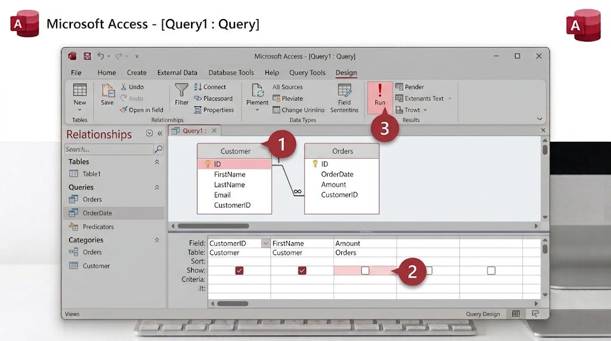

لنفترض أنك تريد معرفة "الكتب التي مؤلفها ابن خلدون" فقط، من بين مئات الكتب؛ بدلًا من البحث يدويًا، يتيح لك الاستعلام كتابة شرط بحث، ويتولى Access تصفية النتائج تلقائيًا.

- من تبويب "Create"، اضغط "Query Design".
- أضف جدول "Books" إلى الاستعلام، ثم أغلق نافذة إضافة الجداول.
- اسحب الحقول التي تريد ظهورها في النتيجة (عنوان الكتاب، المؤلف) إلى الشبكة السفلية.
- في عمود "المؤلف"، وفي صف "Criteria" (الشرط)، اكتب:
ابن خلدون - اضغط زر "Run" (علامة التعجب الحمراء) لتشغيل الاستعلام ورؤية النتيجة المفلترة.
- احفظ الاستعلام باسم "كتب ابن خلدون".
هل تعلم؟
لا يخزّن الاستعلام نسخة جديدة من البيانات؛ بل هو بمثابة "عدسة" تعرض جزءًا من الجدول الأصلي وفق الشرط الذي وضعته، وأي تعديل في الجدول الأصلي ينعكس تلقائيًا في نتيجة الاستعلام.
جرّب بنفسك
أنشئ استعلامًا ثانيًا يعرض فقط الكتب التي سنة نشرها أكبر من 1900.
تلميح
في عمود "سنة النشر"، وفي صف Criteria، اكتب: >1900 — يفهم Access رموز المقارنة (أكبر من، أصغر من) بالطريقة نفسها المستخدمة في الرياضيات.